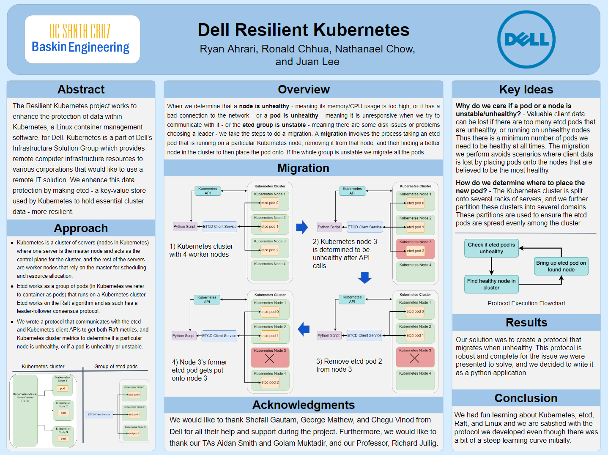
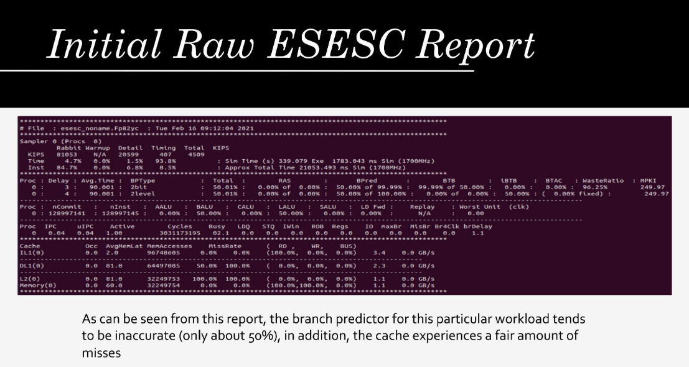
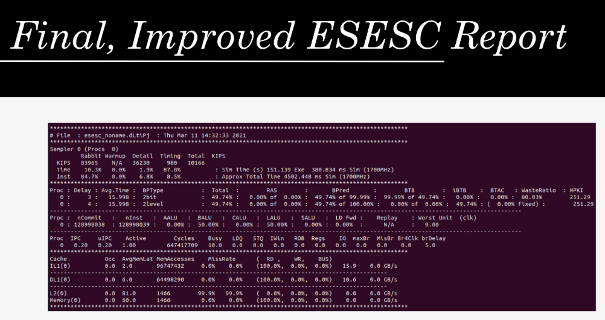

I am orginally from the Bay Area although both my parents were born in Iran.
I graduated in Spring 2022 with a
Bachelors Degree in Computer Engineering from UC Santa Cruz.
Currently still living in the bay, I am working as a Software
Engineer while getting my masters degree. My area of intrest for research is Explainability in Artificial
Intelligence.
Working with a part of the Infrastructure Solutions Group at DELL, myself
and a group of classmates worked to create an automated solution to provide
resillient availabilty to etcd, the data store that holds the important
meta-information necessary for a Kubernetes cluster to run.
Over the course of six months we worked to create a scripted solution that worked
to place etcd where it would best be resillient.
We then presented our solution during an event at UC Santa Cruz in Spring 2022.
( See poster below )

In my first graduate course (which I took in 3rd year) our project was
to improve the instruction per second performance of the
ESESC Operating System
For 1 quarter I was tasked with finding an underperforimng workload, and then
finding a method to improve its performance.
At the end I acheived the speedup present in the following images.


School Email: rahrari@ucsc.edu
Personal Email: nighthawks258@gmail.com